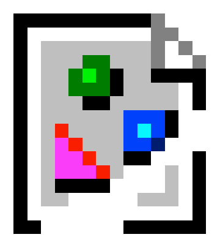

Hello! Welcome to The DOS Archives, your one stop shop for web development news and more!
That's me! My name's Aidan. I'm the one who coded this website from scratch and developed all of what you see here. I'm basically "the team", it's just me! ^^
Disclaimer: Some code has been borrowed from my other personal website, which you can find here.
The font used on this website, "IBMVGA8", originally developed by IBM Corporation and adapted into a font by VileR, can be found here. The font is licensed under a Creative Commons Attribution-ShareAlike 4.0 International license.
Hello! Like I said in the column to the left, my name is Aidan. I'm a 19 year old student at the University of Northampton, and I'm thoroughly enjoying my time here.
I have been into computers for many years, over a decade now. Computers have basically been a part of my life since I was born, starting with my parents' Packard Bell Club PC.
It looked something like this: (my original machine is now long gone)
Click image for source.
It introduced me to the world of Windows 98FE and PC gaming, including PC Play and Learn, of which I still have a lot of discs for. Years and years on from then I still tinker with PCs in my spare time, from new to old. I recently rebuilt a far more capable machine based on the same CPU of my first PC, a Pentium II, and put it into the case of the first PC I ever bought myself, an Acer Aspire M1610.
It looks like this:
Click image for source.
And from there, the sky is the limit.
This site is being developed as part of the University of Northampton CSY1018 Web Development course.
As part of this course, I am being asked to write a website in a newspaper layout, akin to something like The New York Times.
The site needs to have five pages, which are:
You can find links to these pages above, using the toolbar. The toolbar will light up blue according to the page you are on.
You can find some useful links here, for instance the CSS file, the GitHub page, my personal GitHub page, and other things.
Assignment 1 Brief (Google Docs)